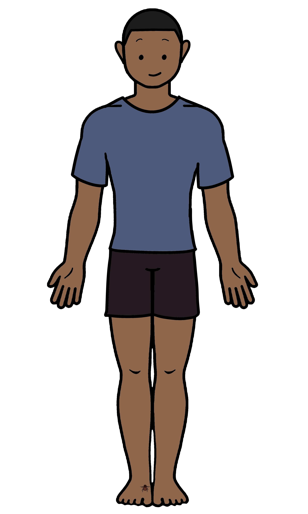

It Starts with a Tick Bite
- Especially during summer and fall months, tick bites are common.
- In and around your hair
- Under the arms
- In your belly button or groin area
- Around your wrists
- Between your legs
- On your ankles and feet
- If you find a tick latched into skin, grip as close to the skin as possible, and pull steadily until the tick is removed. At this point, you may want to test the tick for lyme disease.
- Following a tick bite, symptoms may appear in the coming days to weeks, and may include:
- Fever and chills
- Bulls-eye rash
- Headaches
- Joint and muscle aches
- Swollen lymph nodes
- Lyme symptoms overlap with many conditions - it's crucial to provide your doctor with as much exposure and symptom information as possible.
- Long Lyme is a serious condition. Left untreated, an infection can spread and many symptoms may develop:
- Arthritis, especially in knees
- Muscle weakness
- Facial palsy
- Brain fog
- Nerve damage
- Other rashes
- These symptoms may last for years, and are not well-understood, so it's important to talk to your doctor if you suspect their onset.
Removing the tick properly is very important, as if the tick is improperly removed, there's is a chance of infection occuring
Grip the tick with a pair of tweezers as close to the skin as possible, and steadily pull. It may take a few moments.
second set of text here
third set of text here

